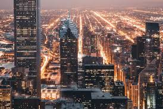
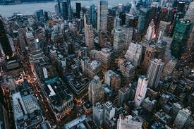
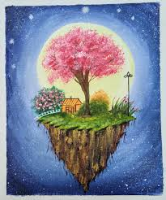
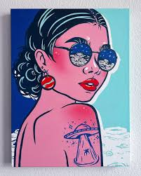
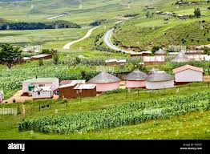
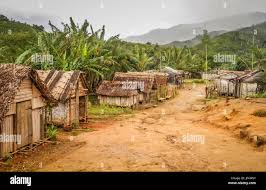

Nature - nature is the best place to have a peace of mind.I personally like it since everything it contains is natural and God made without the interference of humankind. It's mostly the best places to have picnics or even have a moment away from the artificial world.


Urban - unlike the nature with beautiful scenaries , in urban there are many designed buildings and varius spots to do fun thigs like playing,watching cinemas or even having a moment to watch how different people conduct their daily lives. in urban areas one is able to learn different things as it evolves in each and every generation
 Art world - art mostly speaks ones mind or even heart.Art is used mostly to potray fellings that are hard to speak out .Through art we are able to understand each other easily. A world without art is a disaster.
 rural - as commonly nown shaggs these is where we find diifferent kind of domestic animals.In the rural areas we get to earn how to do various work manually unlike in urban areas were we depend on machines.Rurals areas are the second best places to but most people despise living in these areas.
 